Los objetos necesarios para este juego serán, un bicho (en nuestro caso pondremos una mariquita), distintas frutas que nos iremos comiendo, un cubo de basura, un reloj y una imagen de frutas.
Para este juego necesitaremos dos escenarios, el escenario inicial (tendremos que pinchar en él para iniciar el juego) y el escenario del juego.
Para descargar los objetos necesarios para el juego, lo haremos desde este link. Es un archivo comprimido con 5 objetos, 2 escenarios y un sonido. Lo descargaremos y lo descomprimimos en el directorio del alumno.
El juego consiste en que el bicho tiene que ir cogiendo las frutas que van apareciendo aleatoriamente por la
pantalla. Irá acumulando puntos y tendrá un tiempo determinado para poder recoger la fruta. Además, ira
dejando su rastro y no podrá chocarse contra él.
Primeramente prepararemos la pantalla inicial. Colocaremos el escenario inicial y el bicho en el centro del
mismo. En el lateral del escenario tendremos que poner la imagen de la fruta, el cubo de basura y el reloj.
Cada objeto del lateral tendrá una variable asociada que mostraremos bajo el objeto, "Puntos" bajo la fruta,
"Vidas" pago el cubo de basura y "Tiempo" bajo el reloj. Además crearemos otra variable más, que llamaremos
"Jugando" que nos indicará si estamos jugando o no.
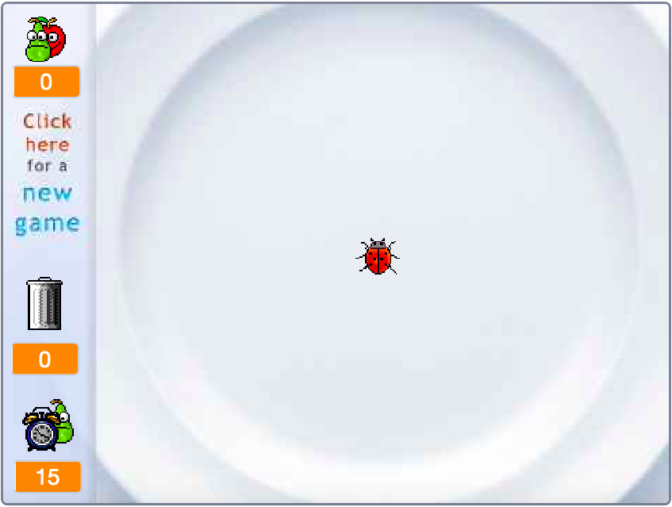
En el escenario, crearemos un evento "Al Hacer Click En El Escenario" que nos permitirá iniciar el juego. Para ello, si el juego no está en marcha, activaremos la variable "Jugando", cambiaremos el escenario al "Escenario Juego" y mandaremos el mensaje "Empezar", que hará que todos los objetos empiecen el juego.
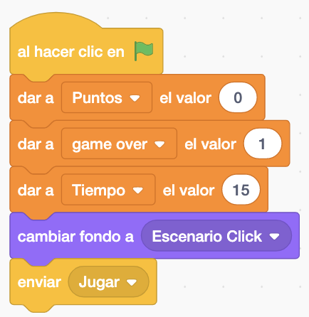
Después programaremos el bicho. Crearemos un nuevo bloque que llamaremos "Inicializar Juego" que tendrá todo
lo necesario para inicializar nuestro juego. Creamos un bloque ya que lo llamaremos desde varios sitios y
así no duplicamos código.
Vamos a "Mis bloques" y pinchamos en "Crear un bloque". Aparecerá la ventana de configuración del bloque. En
esta ocasión sólo le daremos un nombre.
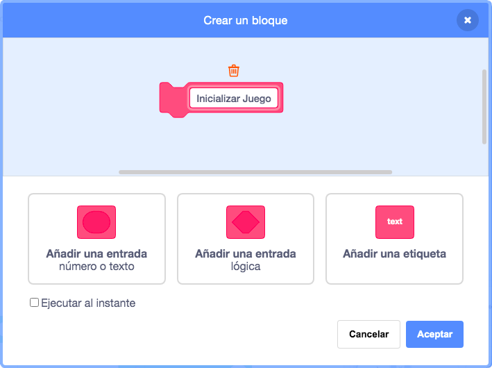
En el bloque le damos un valor inicial a las variables, posicionamos el bicho, borramos la pantalla y preparamos el lápiz.
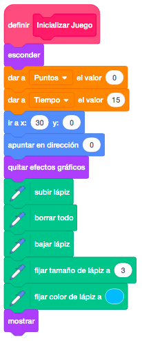
Este bloque "Inicializar Juego" lo llamaremos cuando iniciemos el juego, además de poner el escenario inicial y marcar la variable como que todavía no estamos jugando.
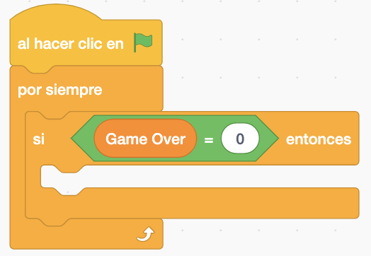
Haremos el movimiento del bicho, que será mediante los cursores. Lo haremos dentro de una etiqueta de
control "Empezar", donde también llamaremos a nuestro bloque de inicializar para poner todo en su sitio antes
de comenzar el juego.
Sólo lo moveremos si estamos jugando y solo nos moveremos dentro del plato con lo que tendremos que acotar
los movimientos.
El bicho tendrá al menos dos disfraces con distinto movimiento que iremos intercambiando al moverse para
darle mayor realismo.
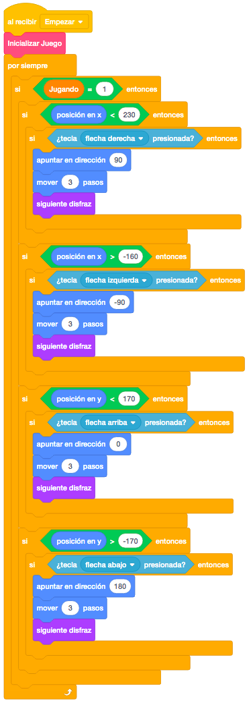
Ahora controlaremos que cuando el bicho toque el rastro que va dejando, el juego termine mandando un mensaje "Parar Juego" que añadiremos a todos los objetos para hacer que paren.
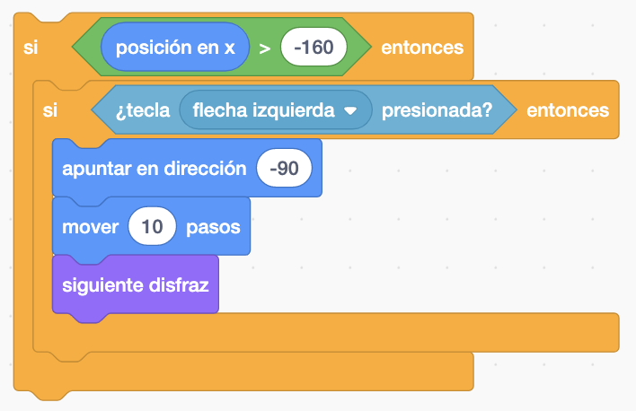
En el propio bicho, el mensaje "Parar Juego" lo programaremos para que haga un efecto de desvanecer en el objeto. Haremos también un sonido de fin de juego que añadiremos al objeto de los objetos descargados, cambiaremos la variable para indicar que ya no estamos jugando y cambiamos el escenario al escenario inicial.
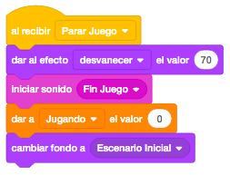
Ahora programaremos las frutas que van apareciendo. Cuando recibamos el mensaje empezar, prepararemos la
fruta para mostrarla y enviaremos un mensaje de "Mostrar Fruta".
En el mensaje "Mostrar Fruta", primero la esconderemos para prepararla, la colocaremos en una posición
aleatoria dentro del plato, le pondremos un disfraz aleatorio y la mostraremos.
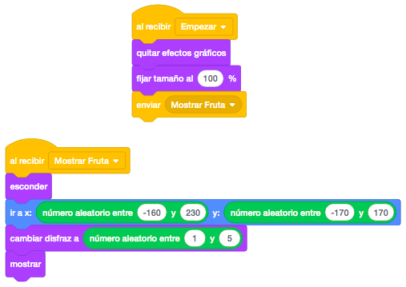
Ahora haremos un efecto en la fruta para que parezca que está flotando. Lo que haremos será un movimiento para arriba y para abajo del objeto.
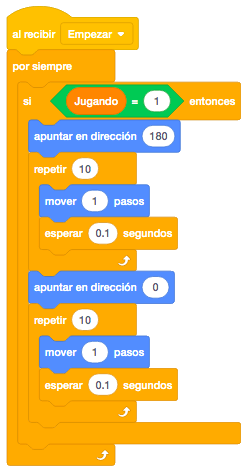
Finalmente en este objeto, al recibir "Parar Juego", desvaneceremos el objeto igual que el bicho.
Lo que nos queda con la fruta es programar que el bicho se la coma. Para ello, en el bicho, controlaremos
donde hacemos que no pueda tocar su rastro, que si tocamos la fruta, haremos un sonido, sumaremos un punto y
llamaremos al mensaje "Mostrar Fruta" para que aparezca otra en otro sitio del plato.
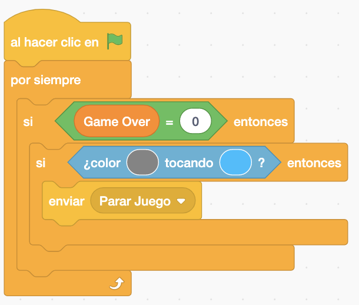
Vamos a programar el cubo de la basura. Su funcionamiento es que cuando se pincha en el cubo, limpiamos la
pantalla y le quitamos una vida. Solo limpiará la pantalla mientras tenga vidas.
Al recibir el mensaje "Empezar", pondremos 3 vidas y pondremos el primer disfraz del cubo.
Después, al hacer click en el objeto, si estamos jugando y tenemos vidas, haremos un sonido, le quitaremos
una vida, borraremos todo y por un momento cambiaremos el disfraz y volveremos a poner el inicial.
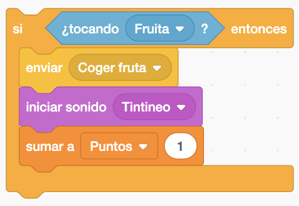
Por último, vamos a programar el reloj. Al empezar, lo que haremos será poner el reloj a 15 para que lo
muestre.
Cuando recibamos el mensaje "Mostrar Fruta", que será cuando volvamos a colocar una fruta en el plato,
pondremos de nuevo el reloj a 15 segundos, y lo que haremos mientras estemos jugando y nos quede tiempo será
ir quitando segundo a segundo del tiempo y hacer sonar un sonido de reloj cuando quedan más de 5 segundos y
otro más alarmante cuando queden 5 segundos o menos.
Cuando se acaben los segundos, mandaremos un mensaje de "Parar Juego".
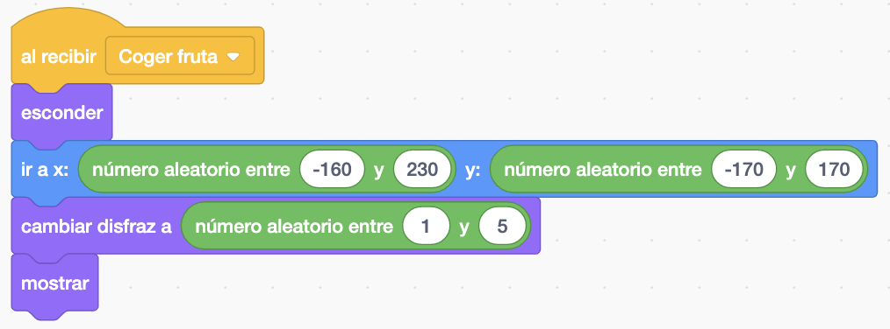
Y el juego quedaría así.
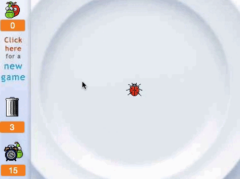
Para ver el juego terminado pulsa
aquí.
Para descargarte el juego terminado pulsa
aquí.